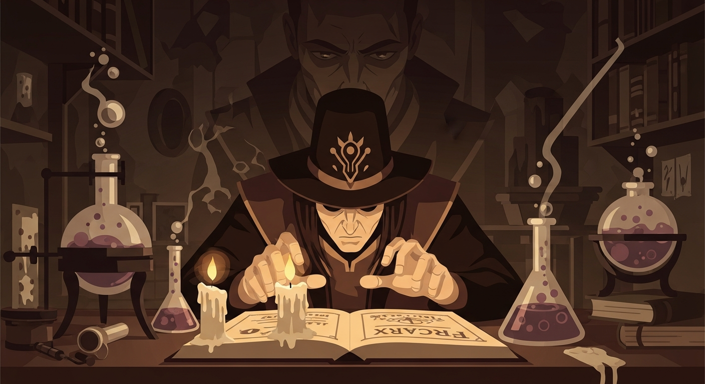
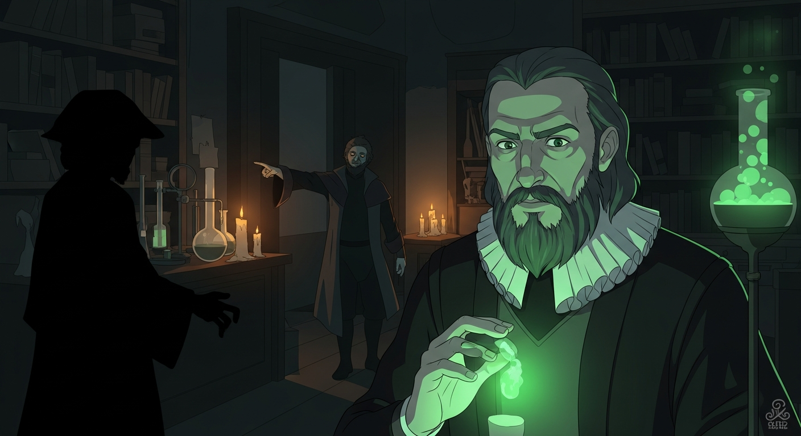
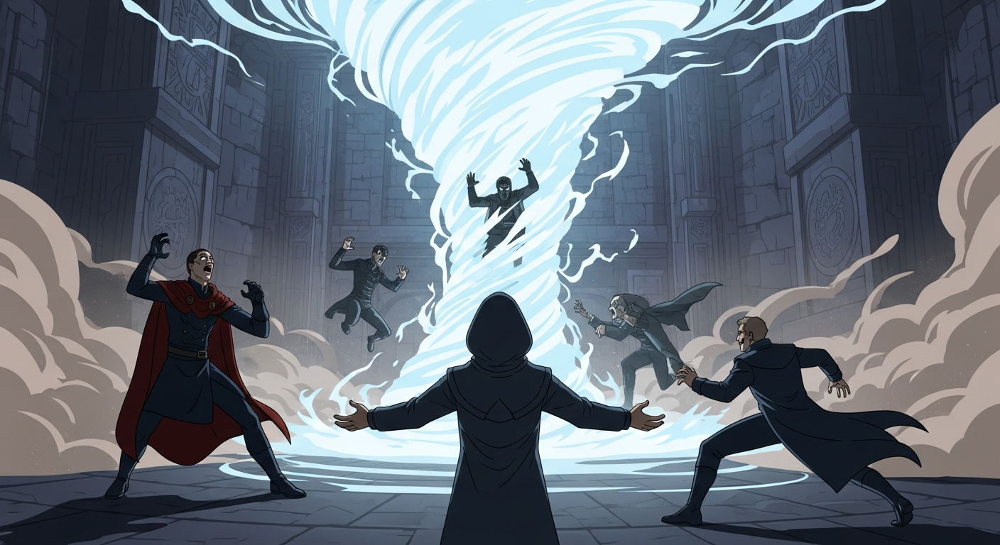
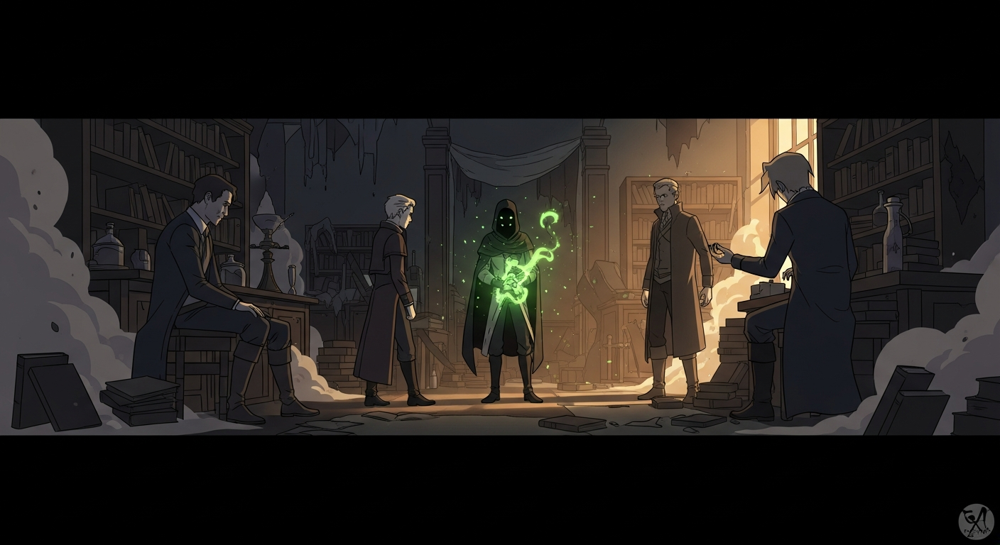

Agrippa, defeated, drowns himself in the *Picatrix* and *Invisibilia Dei*. Tradition offers keys, yes, but also blind alleys. Justin Sledge emerges, holding *Evil Dead* like a forbidden grimoire. "There are shortcuts, Agrippa," he says, "but creation… it's never quite *stable* that way. Understand?"

SLEDGE: Think of *Evil Dead* as a… compressed creation myth. Unstable? Certainly. But the *Mysterious World* Dee cites are just interpretations. Fear of the unknown masked as scholarly caution.
DEE: Agrippa, please! He's accelerating centuries of magical evolution into a single, reckless act!
SLEDGE: Ready, Agrippa?

Centuries of occult theory, distilled and weaponized. Agrippa, you sought forbidden power, bypassed tradition. But tradition, that's just peer pressure from dead people, *usually* for a reason. Now, witness the inevitable: raw potential unleashed, ripe for exploitation. Control? That was *my* goal, not yours.

Agrippa, recognizing the abyss, severed the link. The lab… a testament to unchecked ambition. I dissolved, my purpose served. He'll rebuild, not from blind faith, but informed understanding. He'll respect the *why*, not just the *how*. Tradition is a map, not a prison, *that is to say, folks*. Dee knows.